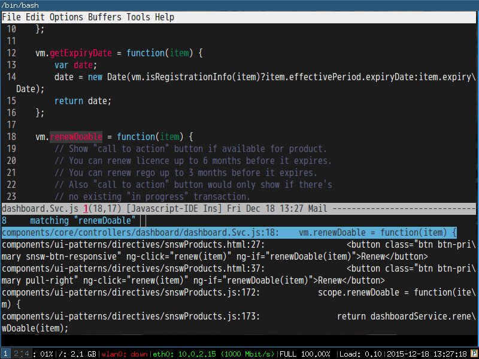

Use ivy to open recent directories
The recent directories include parent directories of opened files in Emacs and the directories accessed in Bash shell.
I used fasd to get the list of directories in shell. Fasd "offers quick access to files and directories for POSIX shells".
Here is my setup,
(require 'ivy) ; swiper 7.0+ should be installed
(defun counsel-goto-recent-directory ()
"Open recent directory with dired"
(interactive)
(unless recentf-mode (recentf-mode 1))
(let ((collection
(delete-dups
(append (mapcar 'file-name-directory recentf-list)
;; fasd history
(if (executable-find "fasd")
(split-string (shell-command-to-string "fasd -ld") "\n" t))))))
(ivy-read "directories:" collection :action 'dired)))
Screenshot:

Emacs vs Sublime Text on Salesforce development
Our client decided to move their legacy system to a cloud platform called salesforce.com. So I got a chance to investigate how to deploy code to the salesforce server inside Emacs and Sublime Text.
Salesforce provides a migration tool to deploy everything from the scratch which takes about 2 minutes. Basically makes it impossbile to be integrated with text editors.
Luckily, there is Force.com CLI which can upload single file in a few seconds. Both Sublime Text and Emacs use this tool.
Sublime Text
You need install sublime text plugin mavensmate. After installation, you need click Login menu at least once. Then when you save the code file, it's automatically deployed to the server.
For some reason, the logged in session will timeout after a couple minutes. So you need re-login. Sometimes deployment will fail, you could click the Fetch menu and fill in the component name into the popup window to confirm the fetch. Fetching will re-activate upload ability.
Mavensmate is actually just GUI wrapper of Force.com CLI,
- When you click login, the command
force loginis executed - When saving file,
force aura pushorforce pushis executed - When fetching,
force fetchis executed
Emacs
In Sublime Text I have to re-login and fetch from time to time. That get me distracted. I prefer executing only one commmand to upload the file in editing. That command should be always successful.
My solution is to combine "login/fetch/push" commnands into one liner which is stored in a file local variable compile-command. So when I execute M-x compile, the commands "login/fetch/push" in compile-command will all be executed sequentially. So I don't need care about login and fetch things any more.
Here is my setup,
(defun my-setup-develop-environment ()
(interactive)
(let (ffip-project-root)
(setq ffip-project-root "~/projects/my-salesforce-project1")
(when (memq major-mode '(web-mode js-mode js2-mode))
(setq-local compile-command
(cond
;; lightning controller javascript file
((string-match "Controller\.js$" (buffer-file-name))
(format "force login -i=test -u=username@salesforce.com -p=password1; cd %s && cp %s %s && force fetch -t Aura -n %s -d %s && mv %s %s && force aura push -f %s"
ffip-project-root
(buffer-file-name) (concat (buffer-file-name) ".bak")
(replace-regexp-in-string "Controller" "" (file-name-base (buffer-file-name)))
ffip-project-root
(concat (buffer-file-name) ".bak") (buffer-file-name)
(buffer-file-name)))
;; ant build
((string-match "build\.xml$" (buffer-file-name))
(format "cd %s && ant deployCode" ffip-project-root))
;; lightning html view
((string-match "\.cmp$" (buffer-file-name))
(format "force login -i=test -u=username@salesforce.com -p=password1; cd %s && force aura push -f %s"
ffip-project-root
(buffer-file-name)))
;; other salesforce pages
(t
(format "force login -i=test -u=username@salesforce.com -p=password1; cd %s && force push -f %s"
ffip-project-root
(buffer-file-name)))
)))
))
;; I use web-mode for html/xml
(add-hook 'web-mode-hook 'my-setup-develop-environment)
;; I use js2-mode for javascript
(add-hook 'js2-mode-hook 'my-setup-develop-environment)
How to be extremely efficient in Emacs
All you need to do is using keyfreq to measure how many time you execute commands.
The frequently used commands should be assigned efficient key bindings.
But you need exclude already optimized commands or commands which cannot be optimized before starting keyfreq.
For example, commands like next-line/previous-line/forward-char/backward-char could be excluded by tweaking variable keyfreq-excluded-commands.
The minimum keyfreq setup,
(require 'keyfreq)
(setq keyfreq-excluded-commands
'(self-insert-command
abort-recursive-edit
forward-char
backward-char
previous-line
next-line))
(keyfreq-mode 1)
(keyfreq-autosave-mode 1)
My actual keyfreq setup is more complicated.
Below is the eight month keyfreq data of my office computer,
| Times | Percentage | Command | Key |
|---|---|---|---|
| 4967 | 12.00% | evilmi-jump-items | % |
| 2892 | 6.99% | compile | , o o |
| 2178 | 5.26% | find-file-in-project-by-selected | , k k |
| 1953 | 4.72% | copy-to-x-clipboard | , a a |
| 1566 | 3.78% | paste-from-x-clipboard | , z z |
| 1227 | 2.96% | er/expand-region | , x x |
| 897 | 2.17% | evil-repeat | . |
| 866 | 2.09% | ido-find-file | , x f, C-x C-f |
| 819 | 1.98% | toggle-full-window | , f f |
| 815 | 1.97% | etags-select-find-tag-at-point | C-], , h t |
| 721 | 1.74% | back-to-previous-buffer | , b b |
| 682 | 1.65% | split-window-vertically | , x 2 |
| 539 | 1.30% | find-function | , h f, C-h C-f |
| 494 | 1.19% | counsel-recentf-goto | , r r |
| 397 | 0.96% | counsel-git-grep | , g g |
| 376 | 0.91% | delete-other-windows | , x 1, C-x 1 |
| 372 | 0.90% | evilnc-comment-or-uncomment-lines | , c i |
| 351 | 0.85% | eval-expression | , e e, M-: |
| 326 | 0.79% | evilmi-select-items | , s i |
| 320 | 0.77% | paredit-doublequote | |
| 307 | 0.74% | evil-filepath-outer-text-object | |
| 300 | 0.72% | steve-ido-choose-from-recentf | |
| 295 | 0.71% | split-window-horizontally | , x 3 |
| 283 | 0.68% | git-add-current-file | , x v a |
| 279 | 0.67% | winner-undo | , x u, , s u, C-x 4 u |
| 278 | 0.67% | describe-function | , h d, C-h f |
| 278 | 0.67% | evil-goto-mark-line | ' |
| 269 | 0.65% | ido-kill-buffer | , x k, C-x k |
| 254 | 0.61% | evil-goto-definition | g d |
| 253 | 0.61% | pop-tag-mark | M-* |
| 251 | 0.61% | git-messenger:popup-message | , x v b, C-x v p |
| 246 | 0.59% | my-goto-next-hunk | , n n |
| 237 | 0.57% | evilnc-comment-operator | , , |
| 235 | 0.57% | flyspell-goto-next-error | , f e, C-, |
| 214 | 0.52% | evil-exit-emacs-state | |
| 212 | 0.51% | browse-kill-ring-forward | |
| 210 | 0.51% | flyspell-buffer | , f b |
| 203 | 0.49% | evil-ex-completion | |
| 195 | 0.47% | narrow-or-widen-dwim | , x n n |
| 173 | 0.42% | comint-send-input | |
| 173 | 0.42% | beginning-of-defun | , b f |
| 170 | 0.41% | evil-surround-region | <visual-state> S |
| 161 | 0.39% | hippie-expand | M-/ |
| 151 | 0.36% | describe-key | , h k, C-h k |
| 149 | 0.36% | evil-space–evil-next-visual-line | SPC |
| 139 | 0.34% | gnus-topic-select-group | |
| 138 | 0.33% | js2-print-json-path | , j p p |
| 132 | 0.32% | goto-line | M-g g, M-g M-g |
| 132 | 0.32% | evil-avy-goto-subword-1 | ; |
| 127 | 0.31% | ibuffer-mark-for-delete | |
| 127 | 0.31% | evil-inner-single-quote | |
| 126 | 0.30% | isearch-other-meta-char | |
| 124 | 0.30% | term-send-up | |
| 118 | 0.29% | isearch-other-control-char | |
| 116 | 0.28% | evil-set-marker | m |
| 115 | 0.28% | browse-kill-ring | M-y, , y y |
| 114 | 0.28% | counsel-git-grep-yank-line | , g l |
| 114 | 0.28% | evil-window-down | C-w j |
| 112 | 0.27% | evil-jump-backward | C-o |
| 108 | 0.26% | evil-visual-block | C-v |
| 108 | 0.26% | evil-space–evil-previous-visual-line | S-SPC |
| 107 | 0.26% | comint-previous-input | |
| 98 | 0.24% | gnus-summary-exit | |
| 98 | 0.24% | evil-search-word-backward | # |
| 98 | 0.24% | forward-button | |
| 96 | 0.23% | evil-paste-pop-next | |
| 95 | 0.23% | ediff-next-difference | |
| 95 | 0.23% | ido-imenu | , i i |
| 92 | 0.22% | my-wg-switch-workgroup | , w g g |
| 90 | 0.22% | counsel-git-find-file | , g f |
| 90 | 0.22% | evilmi-delete-items | , d i |
| 87 | 0.21% | gnus-summary-extract-mail-address | |
| 87 | 0.21% | cliphist-paste-item | , h h |
| 84 | 0.20% | subword-backward-kill | <C-backspace> |
| 84 | 0.20% | paredit-backslash | |
| 83 | 0.20% | my-yas-reload-all | , y c r |
| 81 | 0.20% | pwd | |
| 80 | 0.19% | previous-complete-history-element | |
| 80 | 0.19% | wg-create-workgroup | , w g t |
| 78 | 0.19% | evil-forward-WORD-end | E |
| 77 | 0.19% | gnus-summary-scroll-up | |
| 76 | 0.18% | gnus-summary-extract-cc-and-to | |
| 75 | 0.18% | compile-goto-error | |
| 73 | 0.18% | evil-find-char-to | t |
| 72 | 0.17% | evil-repeat-find-char | |
| 69 | 0.17% | evil-window-up | C-w k |
| 67 | 0.16% | eval-last-sexp | , x e, C-x C-e |
| 66 | 0.16% | evil-complete-next-line | |
| 66 | 0.16% | exchange-point-and-mark | C-x C-x |
| 63 | 0.15% | direx:previous-item | |
| 61 | 0.15% | ediff-jump-to-difference | |
| 60 | 0.14% | diredp-next-line | |
| 58 | 0.14% | evilmr-replace-in-buffer | , r b |
| 58 | 0.14% | counsel-imenu-goto | , i m |
| 56 | 0.14% | evil-goto-mark | ` |
| 55 | 0.13% | gnus-group-unsubscribe-current-group | |
| 55 | 0.13% | ivy-bookmark-goto | |
| 55 | 0.13% | evil-filepath-inner-text-object | |
| 54 | 0.13% | describe-mode | C-h m |
| 54 | 0.13% | recenter-top-bottom | C-l |
| 54 | 0.13% | list-packages | |
| 52 | 0.13% | gnus-topic-mark-topic | |
| 52 | 0.13% | kill-line | C-k, <deleteline> |
| 51 | 0.12% | find-and-ctags-update-all-tags-force | |
| 50 | 0.12% | evil-paste-before | P |
| 49 | 0.12% | execute-extended-command | <execute>, C-x RET |
| 49 | 0.12% | etags-select-quit | |
| 49 | 0.12% | evil-inner-WORD | |
| 48 | 0.12% | find-tag | g C-] |
| 47 | 0.11% | diredp-previous-line | |
| 46 | 0.11% | paredit-close-square | |
| 44 | 0.11% | paredit-open-square | |
| 44 | 0.11% | evil-paste-last-insertion | |
| 42 | 0.10% | evil-inner-double-quote | |
| 42 | 0.10% | ivy-imenu-goto | |
| 40 | 0.10% | counsel-git-find-my-file | , g m |
| 39 | 0.09% | cp-filename-of-current-buffer | , f n |
| 39 | 0.09% | gnus-article-read-summary-keys | |
| 39 | 0.09% | isearch-nonincremental-exit-minibuffer | |
| 38 | 0.09% | sh-assignment | |
| 38 | 0.09% | mark-whole-buffer | , x h, C-x h |
| 38 | 0.09% | evilmi-inner-text-object | |
| 36 | 0.09% | evilnc-comment-or-uncomment-paragraphs | , c p, C-c p |
| 36 | 0.09% | evil-toggle-input-method | C-\ |
| 35 | 0.08% | org2nikola-export-subtree | |
| 35 | 0.08% | subword-forward | M-f, ESC <right> |
| 34 | 0.08% | evil-open-above | O |
| 34 | 0.08% | compose-mail | C-x m |
| 33 | 0.08% | evil-inner-paren | |
| 33 | 0.08% | term-send-raw-meta | |
| 33 | 0.08% | evil-invert-char | ~ |
| 32 | 0.08% | evil-space–evil-repeat-find-char | |
| 32 | 0.08% | httpd-restart-at-default-directory | , w r d |
| 32 | 0.08% | cp-fullpath-of-current-buffer | , f p |
| 31 | 0.07% | evil-forward-WORD-begin | W |
| 30 | 0.07% | sort-lines | , s l |
| 30 | 0.07% | bmkp-w3m-jump | |
| 30 | 0.07% | evilnc-copy-and-comment-lines | , c c, C-c c |
| 29 | 0.07% | toggle-company-ispell | , t c i |
| 29 | 0.07% | top-level | |
| 28 | 0.07% | package-menu-mark-upgrades | |
| 27 | 0.07% | evil-numbers/dec-at-pt | - |
| 27 | 0.07% | end-of-defun | , e f, C-M-e |
| 27 | 0.07% | my-setup-develop-environment | |
| 26 | 0.06% | evil-paste-pop | |
| 25 | 0.06% | ediff-previous-difference | |
| 25 | 0.06% | evil-backward-WORD-begin | B |
| 25 | 0.06% | goto-char | g o, M-g c |
| 25 | 0.06% | w3m-close-window | |
| 25 | 0.06% | org-mime-htmlize | |
| 25 | 0.06% | gnus-group-exit | |
| 24 | 0.06% | git-gutter:toggle | C-x C-g |
| 23 | 0.06% | my-gnus-group-list-subscribed-groups | |
| 23 | 0.06% | find-directory-in-project-by-selected | , f d |
| 23 | 0.06% | evil-inner-curly | |
| 22 | 0.05% | org-edit-src-exit | |
| 22 | 0.05% | string-edit-at-point | , s e |
| 22 | 0.05% | package-menu-mark-delete | |
| 22 | 0.05% | ido-magic-forward-char | |
| 22 | 0.05% | run-js | , r j s |
| 22 | 0.05% | git-gutter-reset-to-head-parent | , g s h |
| 21 | 0.05% | counsel-read-history | |
| 21 | 0.05% | rcirc-send-input | |
| 21 | 0.05% | gnus-undo | |
| 21 | 0.05% | subword-backward | M-b |
| 20 | 0.05% | company-select-next | |
| 20 | 0.05% | what-cursor-position | g a, g 8, C-x = |
| 20 | 0.05% | my-grep | , q q |
| 20 | 0.05% | hydra-gnus-summary/body | |
| 19 | 0.05% | ansi-term | |
| 19 | 0.05% | evil-window-right | C-w l |
| 19 | 0.05% | debugger-jump | |
| 19 | 0.05% | wg-switch-to-workgroup | |
| 19 | 0.05% | yas-abort-snippet | |
| 19 | 0.05% | tags-loop-continue | M-, |
| 19 | 0.05% | swiper-the-thing | , s s |
| 18 | 0.04% | my-wg-swich-to-workgroup | |
| 18 | 0.04% | org-edit-special | |
| 17 | 0.04% | lisp-complete-symbol | |
| 17 | 0.04% | my-wg-switch-to-workgroup-at-index | |
| 17 | 0.04% | test | |
| 17 | 0.04% | ediff-scroll-vertically | |
| 16 | 0.04% | w3m-view-previous-page | |
| 16 | 0.04% | evil-window-left | C-w h |
| 16 | 0.04% | isearch-yank-kill | |
| 16 | 0.04% | my-goto-previous-hunk | , p p |
| 16 | 0.04% | js-beautify | , j b |
| 16 | 0.04% | hydra-launcher/body | |
| 16 | 0.04% | read-only-mode | C-x C-q |
| 16 | 0.04% | message-send-and-exit | |
| 16 | 0.04% | etags-select-goto-tag | |
| 15 | 0.04% | evil-next-match | g n |
| 15 | 0.04% | js2r-kill | , j j k |
| 15 | 0.04% | string-edit-conclude | |
| 15 | 0.04% | delete-char | |
| 14 | 0.03% | gnus-summary-limit-to-author | |
| 14 | 0.03% | ediff-swap-buffers |
Diff regions in Emacs
I know M-x ediff-regions-linewise.
But it's kind of too generic. I only want to view the different lines of two regions as quickly as possible.
So here is my code,
;; Diff two regions
;; Step 1: Select a region and `M-x diff-region-tag-selected-as-a'
;; Step 2: Select another region and `M-x diff-region-compare-with-b'
(defun diff-region-format-region-boundary (b e)
"Make sure lines are selected and B is less than E"
(let (tmp rlt)
;; swap b e, make sure b < e
(when (> b e)
(setq tmp b)
(setq b e)
(set e tmp))
;; select lines
(save-excursion
;; Another workaround for evil-visual-line bug:
;; In evil-mode, if we use hotkey V or `M-x evil-visual-line` to select line,
;; the (line-beginning-position) of the line which is after the last selected
;; line is always (region-end)! Don't know why.
(if (and (> e b)
(save-excursion (goto-char e) (= e (line-beginning-position)))
(boundp 'evil-state) (eq evil-state 'visual))
(setq e (1- e)))
(goto-char b)
(setq b (line-beginning-position))
(goto-char e)
(setq e (line-end-position)))
(setq rlt (list b e))
rlt))
(defun diff-region-tag-selected-as-a ()
"Select a region to compare"
(interactive)
(when (region-active-p)
(let (tmp buf)
;; select lines
(setq tmp (diff-region-format-region-boundary (region-beginning) (region-end)))
(setq buf (get-buffer-create "*Diff-regionA*"))
(save-current-buffer
(set-buffer buf)
(erase-buffer))
(append-to-buffer buf (car tmp) (cadr tmp))))
(message "Now select other region to compare and run `diff-region-compare-with-b`"))
(defun diff-region-compare-with-b ()
"Compare current region with region selected by `diff-region-tag-selected-as-a' "
(interactive)
(if (region-active-p)
(let (rlt-buf
diff-output
(fa (make-temp-file (expand-file-name "scor"
(or small-temporary-file-directory
temporary-file-directory))))
(fb (make-temp-file (expand-file-name "scor"
(or small-temporary-file-directory
temporary-file-directory)))))
(when fb
(setq tmp (diff-region-format-region-boundary (region-beginning) (region-end)))
(write-region (car tmp) (cadr tmp) fb))
(setq rlt-buf (get-buffer-create "*Diff-region-output*"))
(when (and fa (file-exists-p fa) fb (file-exists-p fb))
(save-current-buffer
(set-buffer (get-buffer-create "*Diff-regionA*"))
(write-region (point-min) (point-max) fa))
(setq diff-output (shell-command-to-string (format "diff -Nabur %s %s" fa fb)))
;; show the diff output
(if (string= diff-output "")
(message "Two regions are SAME!")
(save-current-buffer
(switch-to-buffer-other-window rlt-buf)
(set-buffer rlt-buf)
(erase-buffer)
(insert diff-output)
(diff-mode))))
(if (and fa (file-exists-p fa))
(delete-file fa))
(if (and fb (file-exists-p fb))
(delete-file fb)))
(message "Please select region at first!")))
Use ivy-mode to search bash history
(defun counsel-yank-bash-history ()
"Yank the bash history"
(interactive)
(let (hist-cmd collection val)
(shell-command "history -r") ; reload history
(setq collection
(nreverse
(split-string (with-temp-buffer (insert-file-contents (file-truename "~/.bash_history"))
(buffer-string))
"\n"
t)))
(when (and collection (> (length collection) 0)
(setq val (if (= 1 (length collection)) (car collection)
(ivy-read (format "Bash history:") collection))))
(kill-new val)
(message "%s => kill-ring" val))))
How to use Gnus Group Topics efficiently
Group Topics is used to manage Gnus groups.
For example, you can,
- Place groups (mail folders) from Gmail into "gmail" topic
- Place groups (mails folders) from Outlook.com into "hotmail" topic
- Make "gmail" and "hotmail" belong to the root topic "Gnus"
Enable it is just one line,
(add-hook 'gnus-group-mode-hook 'gnus-topic-mode)
Now comes the question how to delete/add/move the topics?
The official answer is to read its manual.
But there is a simpler solution. All you need to do is insert below code into ~/.emacs or ~/.gnus.el,
(eval-after-load 'gnus-topic
'(progn
(setq gnus-topic-topology '(("Gnus" visible)
(("hotmail" visible nil nil))
(("gmail" visible nil nil))))
(setq gnus-topic-alist '(("hotmail" ; the key of topic
"nnimap+hotmail:Inbox"
"nnimap+hotmail:Drafts"
"nnimap+hotmail:Sent"
"nnimap+hotmail:Junk"
"nnimap+hotmail:Deleted")
("gmail" ; the key of topic
"INBOX"
"[Gmail]/Sent Mail"
"[Gmail]/Trash"
"Drafts")
("Gnus")))))
The management of topics is as easy as editing above code.
My setup always works no matter ~/.newsrc.eld is loaded or not.
BTW, "hotmail" and "gmail" are the keys you used when configuring IMAP accounts,
(setq gnus-select-method
'(nnimap "gmail" ; key
(nnimap-address "imap.gmail.com")
(nnimap-server-port 993)
(nnimap-stream ssl)))
(add-to-list 'gnus-secondary-select-methods
'(nnimap "hotmail" ; key
(nnimap-address "imap-mail.outlook.com")
(nnimap-server-port 993)
(nnimap-stream ssl)))
Git gutter tip
I use git-gutter.el everyday. It indicats "whether a line has been inserted, modified or deleted". You can jump to the inser/modified/deleted line easily.
But I usually need to know what line changed in latest commit.
So I designed `M-x git-gutter-reset-to-head-parent`,
(defun git-gutter-reset-to-head-parent()
(interactive)
(let (parent (filename (buffer-file-name)))
(if (eq git-gutter:vcs-type 'svn)
(setq parent "PREV")
(setq parent (if filename (concat (shell-command-to-string (concat "git --no-pager log --oneline -n1 --pretty='format:%H' " filename)) "^") "HEAD^")))
(git-gutter:set-start-revision parent)
(message "git-gutter:set-start-revision HEAD^")))
(defun git-gutter-reset-to-default ()
(interactive)
(git-gutter:set-start-revision nil)
(message "git-gutter reset"))
`M-x git-gutter-reset-to-default` compare you file under working directory with the latet version under VCS.
`M-x git-gutter:next-hunk` and `M-x git-gutter:previous-hunk` will jump to the deleted/modified/added line.
Use gcalcli for google calendar
I use cli `pip install –user gcalcli parsedatetime` to install gcalcli into HOME folder.
Usage is simple. `gcalcli calw` is enough.
For multiple accounts, `mkdir -p ~/.config/gcacli-work; gcalcli –configFolder ~/.config/gcacli-work calw`.
Use paste (Unix) to join two calendars in bash,
paste <(gcalcli --configFolder ~/.config/gcacli-work calw) <(gcalcli calw)
Edit crontab to remind me about the calendar events,
*/10 * * * * $HOME/.local/bin/gcalcli remind
*/10 * * * * $HOME/.local/bin/gcalcli --configFolder $HOME/.config/gcacli-work remind
Use Ivy-mode to tweak workgroups2
CREATED:
UPDATED:
Workgroups2 will load previous windows layout by default. That's handy for most developers.
But as a freelancer I am always assigned the low spec machine which takes too much time to load the old layout.
So I use Ivy-mode to create a light weight command `my-wg-switch-workgroup`.
Here is code:
(require 'ivy)
(autoload 'wg-create-workgroup "workgroups2" nil t)
(defun my-wg-switch-workgroup ()
(interactive)
(let (group-names selected-group)
(unless (featurep 'workgroups2)
(require 'workgroups2))
(setq group-names
(mapcar (lambda (group)
;; re-shape list for the ivy-read
(cons (wg-workgroup-name group) group))
(wg-session-workgroup-list (read (f-read-text (file-truename wg-session-file))))))
(ivy-read "work groups" group-names
:action (lambda (group)
(wg-find-session-file wg-default-session-file)
(wg-switch-to-workgroup group)))))
(eval-after-load 'workgroups2
'(progn
;; make sure wg-create-workgroup always success
(defadvice wg-create-workgroup (around wg-create-workgroup-hack activate)
(unless wg-current-session
;; code extracted from `wg-open-session'.
;; open session but do NOT load any workgroup.
(let ((session (read (f-read-text (file-truename wg-session-file)))))
(setf (wg-session-file-name session) wg-session-file)
(wg-reset-internal (wg-unpickel-session-parameters session))))
ad-do-it
;; save the session file in real time
(wg-save-session t))
(defadvice wg-reset (after wg-reset-hack activate)
(wg-save-session t))
;; I'm fine to to override the original workgroup
(defadvice wg-unique-workgroup-name-p (around wg-unique-workgroup-name-p-hack activate)
(setq ad-return-value t))))
Hello Ivy-mode, bye Helm
I love Ivy-mode/Swiper because it's quick and easy to extend. So my Helm setup is replaced by ivy-mode.
I will demostrate how I use ivy-mode at first. Then the code.
Please note I only use one API `ivy-read` from ivy-mode.
Demo
M-x counsel-git-grep-yank-line
Use git-grep to grep the lines. Then copy the line into kill ring without opening new window.

M-x counsel-git-find-my-file
Find my file under git version control in recent N weeks.

M-x ivy-imenu-goto
Imenu. It's quick.

M-x ivy-bookmark-goto
Quick and customizable.

Code
Swiper 7.0+ required.
;; {{ @see http://oremacs.com/2015/04/19/git-grep-ivy/
(defun counsel-git-grep-or-find-api (fn git-cmd hint open-another-window)
"Apply FN on the output lines of GIT-CMD. HINT is hint when user input.
IF OPEN-ANOTHER-WINDOW is true, open the file in another window."
(let ((default-directory (locate-dominating-file
default-directory ".git"))
(keyword (if (region-active-p)
(buffer-substring-no-properties (region-beginning) (region-end))
(read-string (concat "Enter " hint " pattern:" ))))
collection val lst)
(setq collection (split-string (shell-command-to-string (format git-cmd keyword))
"\n"
t))
(when (and collection (> (length collection) 0))
(setq val (if (= 1 (length collection)) (car collection)
(ivy-read (format " matching \"%s\":" keyword) collection)))
(funcall fn open-another-window val))))
(defun counsel-git-grep (&optional open-another-window)
"Grep in the current git repository.
If OPEN-ANOTHER-WINDOW is not nil, results are displayed in new window."
(interactive "P")
(let (fn)
(setq fn (lambda (open-another-window val)
(let ((lst (split-string val ":")))
(funcall (if open-another-window 'find-file-other-window 'find-file)
(car lst))
(let ((linenum (string-to-number (cadr lst))))
(when (and linenum (> linenum 0))
(goto-char (point-min))
(forward-line (1- linenum)))))))
(counsel-git-grep-or-find-api fn
"git --no-pager grep --full-name -n --no-color -i -e \"%s\""
"grep"
open-another-window)))
(defun counsel-git-find-file (&optional open-another-window)
"Find file in the current git repository.
If OPEN-ANOTHER-WINDOW is not nil, results are displayed in new window."
(interactive "P")
(let (fn)
(setq fn (lambda (open-another-window val)
(funcall (if open-another-window 'find-file-other-window 'find-file) val)))
(counsel-git-grep-or-find-api fn
"git ls-tree -r HEAD --name-status | grep \"%s\""
"file"
open-another-window)))
(defun counsel-git-grep-yank-line (&optional insert-line)
"Grep in the current git repository and yank the line.
If INSERT-LINE is not nil, insert the line grepped"
(interactive "P")
(let (fn)
(setq fn (lambda (unused-param val)
(let ((lst (split-string val ":")) text-line)
;; the actual text line could contain ":"
(setq text-line (replace-regexp-in-string (format "^%s:%s:" (car lst) (nth 1 lst)) "" val))
;; trim the text line
(setq text-line (replace-regexp-in-string (rx (* (any " \t\n")) eos) "" text-line))
(kill-new text-line)
(if insert-line (insert text-line))
(message "line from %s:%s => kill-ring" (car lst) (nth 1 lst)))))
(counsel-git-grep-or-find-api fn
"git --no-pager grep --full-name -n --no-color -i -e \"%s\""
"grep"
nil)))
(defvar counsel-my-name-regex ""
"My name used by `counsel-git-find-my-file', support regex like '[Tt]om [Cc]hen'.")
(defun counsel-git-find-my-file (&optional num)
"Find my files in the current git repository.
If NUM is not nil, find files since NUM weeks ago.
Or else, find files since 24 weeks (6 months) ago."
(interactive "P")
(let (fn cmd)
(setq fn (lambda (open-another-window val)
(find-file val)))
(unless (and num (> num 0))
(setq num 24))
(setq cmd (concat "git log --pretty=format: --name-only --since=\""
(number-to-string num)
" weeks ago\" --author=\""
counsel-my-name-regex
"\" | grep \"%s\" | sort | uniq"))
;; (message "cmd=%s" cmd)
(counsel-git-grep-or-find-api fn cmd "file" nil)))
;; }}
(defun ivy-imenu-get-candidates-from (alist &optional prefix)
(cl-loop for elm in alist
nconc (if (imenu--subalist-p elm)
(ivy-imenu-get-candidates-from
(cl-loop for (e . v) in (cdr elm) collect
(cons e (if (integerp v) (copy-marker v) v)))
(concat prefix (if prefix ".") (car elm)))
(and (cdr elm) ; bug in imenu, should not be needed.
(setcdr elm (copy-marker (cdr elm))) ; Same as [1].
(list (cons (concat prefix (if prefix ".") (car elm))
(copy-marker (cdr elm))))))))
(defun ivy-imenu-goto ()
"Go to buffer position"
(interactive)
(let ((imenu-auto-rescan t) items)
(unless (featurep 'imenu)
(require 'imenu nil t))
(setq items (imenu--make-index-alist t))
(ivy-read "imenu items:"
(ivy-imenu-get-candidates-from (delete (assoc "*Rescan*" items) items))
:action (lambda (k) (goto-char k)))))
(defun ivy-bookmark-goto ()
"Open ANY bookmark"
(interactive)
(let (bookmarks filename)
;; load bookmarks
(unless (featurep 'bookmark)
(require 'bookmark))
(bookmark-maybe-load-default-file)
(setq bookmarks (and (boundp 'bookmark-alist) bookmark-alist))
;; do the real thing
(ivy-read "bookmarks:"
(delq nil (mapcar (lambda (bookmark)
(let (key)
;; build key which will be displayed
(cond
((and (assoc 'filename bookmark) (cdr (assoc 'filename bookmark)))
(setq key (format "%s (%s)" (car bookmark) (cdr (assoc 'filename bookmark)))))
((and (assoc 'location bookmark) (cdr (assoc 'location bookmark)))
;; bmkp-jump-w3m is from bookmark+
(unless (featurep 'bookmark+)
(require 'bookmark+))
(setq key (format "%s (%s)" (car bookmark) (cdr (assoc 'location bookmark)))))
(t
(setq key (car bookmark))))
;; re-shape the data so full bookmark be passed to ivy-read:action
(cons key bookmark)))
bookmarks))
:action (lambda (bookmark)
(bookmark-jump bookmark)))
))